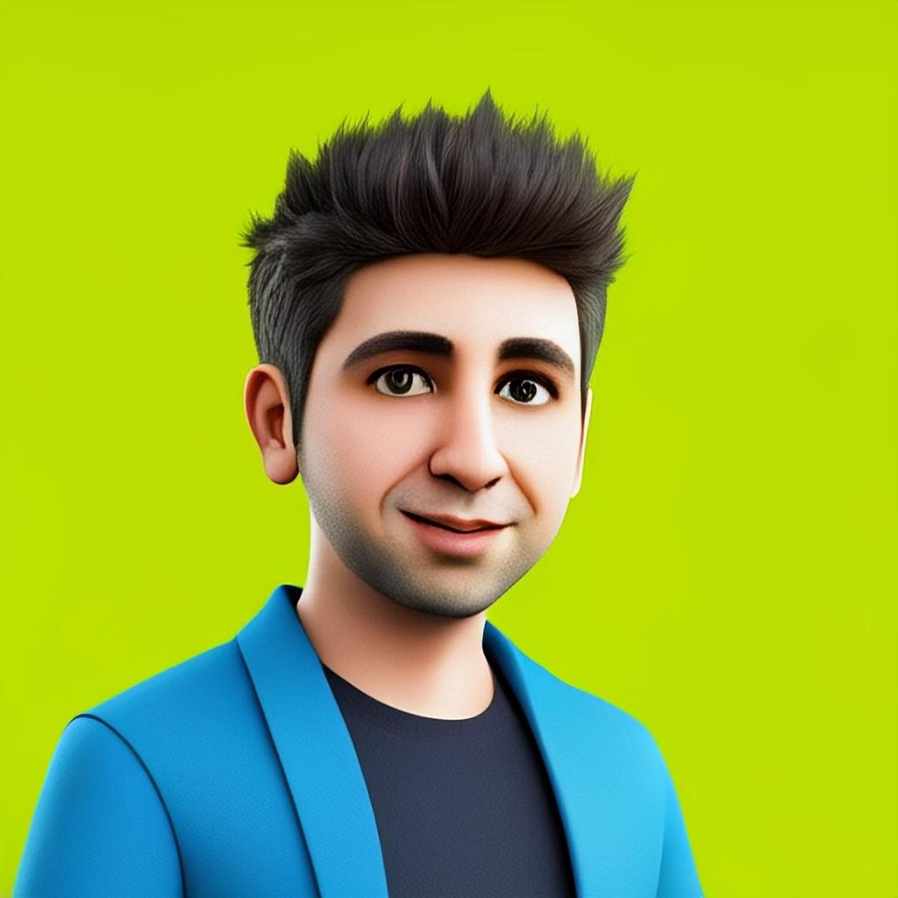

Turn ambiguity into direction
I connect business ambition to technical strategy, turning incomplete ideas into clear decisions, priorities and buildable plans.

FROM ENGINEER TO COMPANY BUILDER · 2017—NOW
The past nine years have brought every part of my career together: hands-on engineering, technical direction, people leadership and commercial responsibility. What began with writing software has grown into building the teams, practices and client partnerships behind a multi-million-revenue technology agency.
Building the agency changed my definition of engineering leadership. The work is no longer only about solving technical problems; it is about creating the clarity, trust and operating systems that let teams solve them—while balancing customer outcomes, commercial reality and the long-term health of the company.
I connect business ambition to technical strategy, turning incomplete ideas into clear decisions, priorities and buildable plans.
I hire, mentor and align engineers around strong practices and an operating rhythm that raises everyone’s game.
I remove technical and organisational roadblocks so teams ship intuitive products on time, within budget and with lasting value.
From mobile operating systems and payments infrastructure to growing a global consultancy.
Founder · IT Consultancy
Through Antirium, I partner with TechNeed to help organisations turn ideas into successful digital products. This role brings together everything I learned as an engineer, technical lead and manager: setting technical direction, aligning engineering with business goals, building and mentoring high-performing teams, removing roadblocks and creating the conditions for predictable delivery. The aim is not simply to ship, but to deliver intuitive products—on time and within budget—that customers love and that create lasting business value.
I also contribute to TechNeed Insights, sharing practical perspectives through articles on product strategy, engineering, AI and the choices behind dependable software.
Explore TechNeed InsightsiOS Team Lead Manager
Kamcord was at a pivotal point in its evolution—from SDK provider to live-streaming platform for mobile games—when I came aboard. As lead for the seven-person iOS team, I helped launch a brand-new mobile app and a digital-currency revenue-sharing platform for creators. The company later pivoted again to Shorts, a short-form video app similar in spirit to today’s Reels.
MTS Software Engineer
My time at PayPal began with its London Innovation team, building prototypes that explored and demonstrated the future potential of PayPal’s technology. A move to Silicon Valley took me to the card.io team, where I helped develop and maintain PayPal’s latest REST Payments SDKs for iOS and Android. I also collaborated across PayPal and Braintree to integrate PayPal Wallet with Braintree One Touch.
Principal Software Engineer
Building on my cross-platform experience, I helped develop the Good Dynamics SDK, enabling enterprise organisations to build applications on Good Technology’s secure mobile stack and deploy them as part of bring-your-own-device programmes across healthcare, government and communications.
Tech Lead · Senior Software Engineer
Building on my Symbian experience, I resolved numerous issues affecting CoPilot on Symbian OS before going on to lead the iOS team. Recognising the iPhone’s potential early, I led the work to bring CoPilot to the platform. It became the second turn-by-turn navigation app in the App Store and generated more than $1 million in revenue within weeks. I also helped develop a cross-platform solution spanning iOS, Android, Windows Mobile and Windows PC.
Software Engineer
My first role after university. I learned Symbian C++ while helping the Connectivity Team deliver a brand-new secure backup and restore system for Symbian OS 9—my first experience building high-quality systems at enterprise scale.
Broad enough to see the whole system. Deep enough to ask the right questions and get into the detail when it matters.
MSci Computer Science · 2:1
2000—2004
Braintree · Birdback Payments Hackathon
2013
The interests that keep me curious, moving and happily overthinking the details.
I got hooked on making better espresso and went deep into the machines, grinders and technique—while constantly watching James Hoffmann, Lance Hedrick and other coffee obsessives.
Tesla and the wider EV world fascinate me, especially one persistent question: why is great software still so hard—even when the computer has wheels?
A regular five-kilometre reset: keep fit, keep improving and keep challenged, one finish line at a time.
Mobile-only banking, green-energy controls and apps for almost everything. I’m still fascinated by how the phone became the interface to everyday life.